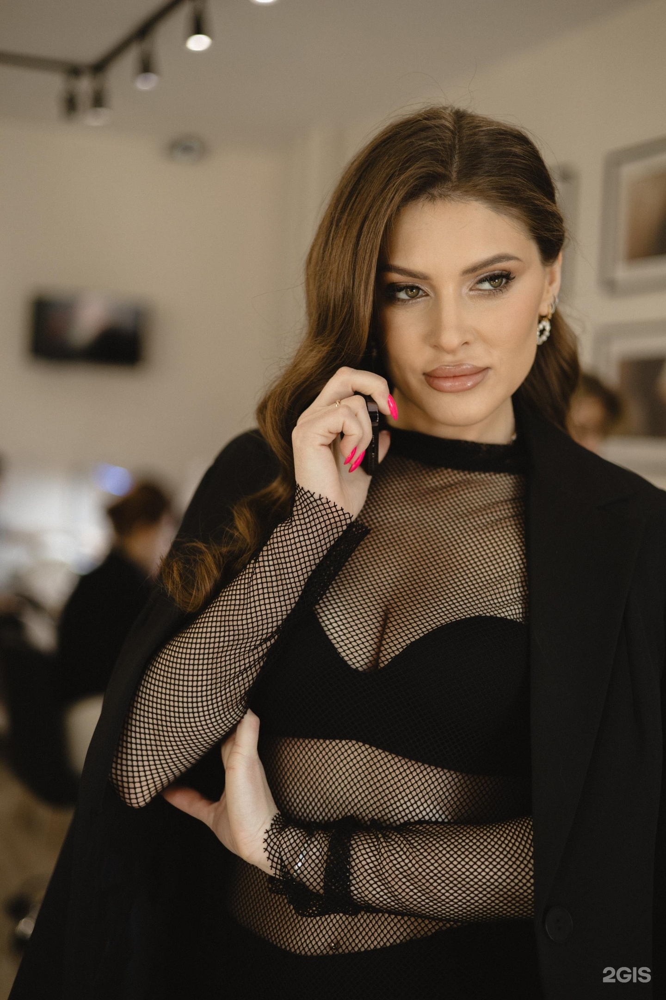

Beauty Club, салон красоты · Уфа
Выбери
своё.
Услуги, цены и быстрые действия в одном месте. Открой услугу, посмотри стоимость и перейди к записи.

Актуальный каталог
Услуги и
цены.
01Стрижка женская от стилистаСтрижка женская от стилиста создается индивидуально для каждой клиентки. Мастер проводит консультацию, анализирует структуру ваших волос и черты лица, затем выбирает оптимальную технику стрижки.
В процесс входит профессиональное мытье головы, точная стрижка выбранной техникой с использованием премиальных инструментов, сушка и финальная укладка. Результат — идеальная форма, которая подчеркивает вашу естественную красоту и облегчает ежедневный уход.
Вы получите стрижку, которая держит форму, легко укладывается и создает законченный образ. Запишитесь онлайн сейчас!2199–2799 ₽↗02Маникюр, снятие гель-лака и покрытие гель-лакомМаникюр, снятие гель-лака и покрытие гель-лаком включает полный цикл обновления ногтей за одно посещение. Мастер аккуратно снимает старое покрытие щадящими средствами, затем проводит классический маникюр с обработкой кутикулы и придает ногтям идеальную форму.
Далее ногти подготавливаются к новому покрытию: шлифуются, обезжириваются и укрепляются базой. Цветной гель-лак наносится в несколько слоев с полимеризацией в лампе, завершается топовым покрытием и питательным маслом для здоровья ногтей.
Результат — идеально ровное, блестящее покрытие, которое сохранит безупречный вид до трёх недель. Услуга идеальна для занятых людей, ценящих качество и экономию времени.
Запишитесь онлайн сейчас!2699 ₽↗03Стрижка мужская от стилистаСтрижка мужская от стилиста в Beauty Club — это не просто стрижка, а полное преображение вашего образа. Процесс начинается с консультации, где мастер определяет ваши пожелания и анализирует форму лица, структуру и тип волос.
Что входит в услугу: профессиональное мытье головы, точная стрижка выбранной техникой с учетом всех особенностей вашей внешности, моделирование контуров и пропорций, финальная укладка с использованием профессиональных средств.
Что вы получите: аккуратный, ухоженный вид, который подчеркивает достоинства лица и соответствует вашему стилю. Наши опытные стилисты с многолетним опытом гарантируют безупречный результат, который держится долго и легко укладывается дома.
Запишитесь онлайн сейчас!1699–2199 ₽↗04Сложное окрашивание волос от стилистаСложное окрашивание волос от стилиста — это многоэтапный процесс создания глубокого, многогранного цвета. Наш мастер проводит консультацию и анализирует состояние ваших волос, затем разрабатывает персональную цветовую карту с учетом вашего цветотипа и пожеланий.
Процедура включает применение различных техник — балаяж, омбре, шатуш или color melting — для создания плавных переходов и объема цвета. Мы используем профессиональные бонд-системы, которые защищают структуру волос во время окрашивания, и завершаем процесс тонированием для достижения идеального оттенка.
Результат: волосы с глубоким, многомерным цветом, здоровым блеском и сохраненной структурой. Эффект сохраняется 6-8 недель при правильном уходе.
Запишитесь онлайн сейчас!8799–27699 ₽↗05Маникюр, снятие гель-лака, покрытие гель-лаком и укреплениеПолный комплекс включает аппаратный маникюр с профессиональной обработкой формы и кутикулы, щадящее снятие предыдущего гель-лака, которое сохраняет здоровье ногтей, и нанесение свежего покрытия с укрепляющим слоем.
Результат: безукоризненные ногти с глянцевым блеском, который держится до 4 недель без сколов и потускнения. Укрепляющий слой предотвращает расслоение и ломкость, позволяя вам каждый день наслаждаться идеальным маникюром без лишних усилий.
Запишитесь онлайн сейчас!3199 ₽↗06Окрашивание корней и тонирование волос от стилистаОкрашивание корней и тонирование волос включает детальную видеодиагностику состояния волос, подбор оптимального красителя с учетом натурального оттенка и опыт наших мастеров, спасивших более 500 сложных случаев после домашних экспериментов.
В процессе работы мы окрашиваем корни с идеальным переходом, затем наносим тонирование по длине для гармоничного цвета и защиты от пересушивания. Для каждого окрашивания проводим тест-пряди при необходимости и используем только премиальные продукты L'Oreal и Sensido.
Результат — ровный, насыщенный цвет, здоровые и блестящие волосы, которые держат результат долгое время. Процедура завершается восстановительным уходом и профессиональной укладкой.
Запишитесь онлайн сейчас!7099–13199 ₽↗07Тонирование волос от стилистаТонирование волос от стилиста в Beauty Club — это деликатная процедура, которая придает волосам насыщенный оттенок и здоровое сияние.
Процесс включает консультацию колориста, который определяет исходное состояние волос и подбирает оптимальный оттенок под ваш цветотип. Волосы подготавливаются специальным шампунем, затем тонирующий состав наносится по профессиональной технике для равномерного распределения пигмента. После выдержки волосы промываются и обрабатываются закрепляющими средствами.
Вы получите роскошные волосы с естественным оттенком, который подчеркивает вашу индивидуальность. Результат держится длительное время благодаря премиальным красителям L'Oreal и Sensido, которые щадят структуру волос. Волосы выглядят здоровыми, блестящими и ухоженными.
Запишитесь онлайн сейчас!5699–10899 ₽↗08Оформление и окрашивание бровейОформление и окрашивание бровей — комплексная процедура архитектуры лица, которая полностью преображает ваш образ. Наши мастера подбирают идеальную форму и оттенок, учитывая особенности вашего лица, цвет волос и тон кожи.
Что входит в услугу: профессиональная консультация, коррекция формы пинцетом или воском, окрашивание специальными стойкими красителями и финальное моделирование.
Что вы получите: выразительный взгляд, который подчеркивает вашу индивидуальность и уверенность. Результат держится 3-4 недели без ежедневного макияжа, и ваши брови всегда выглядят безупречно ухоженными.
Запишитесь онлайн сейчас!1699–1999 ₽↗
Контакты
До встречи
в Beauty Club.
улица Октябрьской Революции, 27Б
Ежедневно 10:00–21:00
+79770990917
Быстрые ссылки